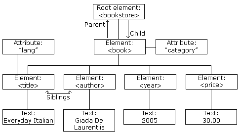
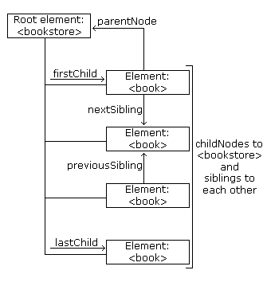

From http://www.w3schools.com (Copyright Refsnes Data)
The XML DOM views an XML document as a node-tree.
All the nodes in the tree have a relationship to each other.
The XML DOM views an XML document as a tree-structure. The tree structure is called a node-tree.
All nodes can be accessed through the tree. Their contents can be modified or deleted, and new elements can be created.
The node tree shows the set of nodes, and the connections between them. The tree starts at the root node and branches out to the text nodes at the lowest level of the tree:

The image above represents the XML file books.xml.
The nodes in the node tree have a hierarchical relationship to each other.
The terms parent, child, and sibling are used to describe the relationships. Parent nodes have children. Children on the same level are called siblings (brothers or sisters).
The following image illustrates a part of the node tree and the relationship between the nodes:

Because the XML data is structured in a tree form, it can be traversed without knowing the exact structure of the tree and without knowing the type of data contained within.
You will learn more about traversing the node tree in a later chapter of this tutorial.
Look at the following XML fragment:
|
<bookstore> <book category="cooking"> <title lang="en">Everyday Italian</title> <author>Giada De Laurentiis</author> <year>2005</year> <price>30.00</price> </book> </bookstore> |
In the XML above, the <title> element is the first child of the <book> element, and the <price> element is the last child of the <book> element.
Furthermore, the <book> element is the parent node of the <title>, <author>, <year>, and <price> elements.
From http://www.w3schools.com (Copyright Refsnes Data)